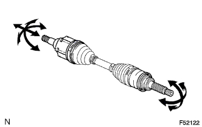

FRONT DRIVE SHAFT ASSEMBLY > INSPECTION |
| 1. INSPECT FRONT DRIVE SHAFT ASSEMBLY |
|  |
Check if there is excessive play in the outboard joint.
Check if the inboard joint shaft slides smoothly in the thrust direction.
Check if there is excessive play in the radial direction of the inboard joint shaft.
Check the boots for damage.